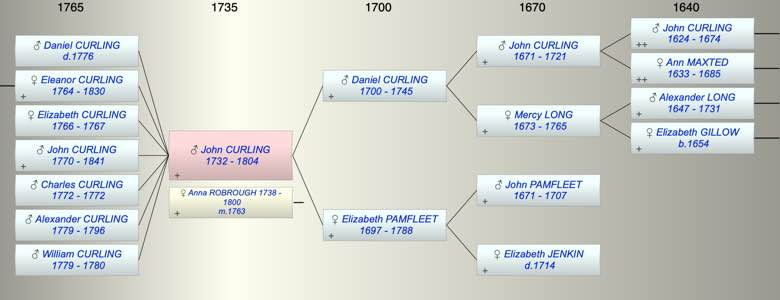

| [Index] |
| John CURLING (1732 - 1804) |
|  |
| b. 1732 at St Laurence |
| m. 30 Jun 1763 Anna Maria ROBROUGH (1738 - 1800) at St Savior, Southwark |
| d. 1804 at St Laurence aged 72 |
| Parents: |
| Daniel CURLING (1700 - 1745) |
| Elizabeth PAMFLEET (1697 - 1788) |
| Siblings (5): |
| Elizabeth CURLING (1724 - 1724) |
| Mercy CURLING (1727 - 1727) |
| Daniel CURLING (1730 - 1818) |
| Alexander CURLING (1739 - 1789) |
| William CURLING (1742 - 1823) |
| Grandchildren (3): |
| Ann Maria HOOPER ( - 1806), Eleanor HOOPER (1795 - ), Thomas HOOPER (1796 - 1869) |
| Events in John CURLING (1732 - 1804)'s life | |||||
| Date | Age | Event | Place | Notes | Src |
| 1732 | John CURLING was born | St Laurence | Note 1 | ||
| 06 Mar 1745 | 13 | Death of father Daniel CURLING (aged 45) | St Laurence | Note 2 | |
| 30 Jun 1763 | 31 | Married Anna Maria ROBROUGH (aged 25) | St Savior, Southwark | Note 3 | |
| abt 1764 | 32 | Birth of daughter Eleanor CURLING | |||
| 1766 | 34 | Birth of daughter Elizabeth Mary CURLING | Southwark | Note 4 | |
| 1767 | 35 | Death of daughter Elizabeth Mary CURLING (aged 1) | Note 5 | ||
| abt 1770 | 38 | Birth of son John CURLING | |||
| abt 1772 | 40 | Birth of son Charles Daniel CURLING | |||
| 1772 | 40 | Death of son Charles Daniel CURLING | Note 6 | ||
| 1776 | 44 | Death of son Daniel CURLING | Southwark | Note 7 | |
| 1779 | 47 | Birth of son Alexander George CURLING | Note 8 | ||
| 1779 | 47 | Birth of son William CURLING | Note 9 | ||
| 1780 | 48 | Death of son William CURLING (aged 1) | Note 10 | ||
| 31 Jan 1788 | 56 | Death of mother Elizabeth PAMFLEET (aged 91) | St Laurence | aged 90 ex MI | |
| 1796 | 64 | Death of son Alexander George CURLING (aged 17) | Note 11 | ||
| 1800 | 68 | Death of wife Anna Maria ROBROUGH (aged 62) | Note 12 | ||
| 1804 | 72 | John CURLING died | St Laurence | Note 13 | |
| Personal Notes: |
|
Will of John Curling of Southwark 1805 ex Judy Adams see Ancestry
John was merchant tailor of London but now of St Laurence in Thanet. Son in law Thomas Abbott Hooper of St Savior, Southwark. His grandson Thomas Hooper, granddaughter Eleanor children of Thomas and my daughter Eleanor. Son John Curling of St Laurence, executor. Witness Daniel Curling and Theo Philpot. Proved 4 Jan 1805 Freedom of City of London with his brother William Curling fishmonger and Charles Robrough brother in law. |
| Created on a Mac™ using iFamily for Mac™ on 8 Oct 2023 |